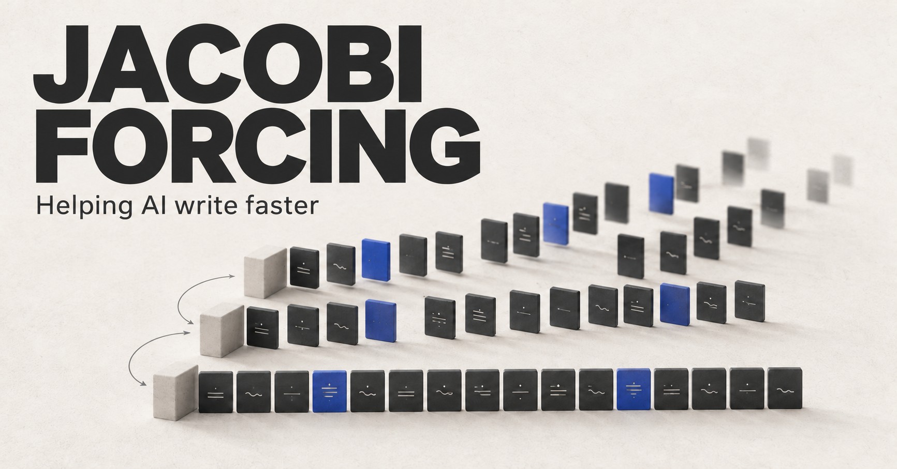

AI EXPLAINED
Jacobi Forcing
Helping AI write faster

You ask an AI a question, and its answer appears piece by piece. You may have heard why: many AI chatbots generate text one token at a time. Jacobi Forcing teaches a model to make useful progress on several upcoming tokens together. In one coding benchmark, that meant almost four times the generation speed — with a measurable change in accuracy.
A token is a small piece of text. It might be a whole word, part of a word, or a punctuation mark. To keep the idea simple, imagine the pieces are words.
To write “The cat sat on the mat,” a typical language model predicts “The,” then uses that to predict “cat,” then uses “The cat” to predict what comes next. Each new piece becomes part of the information used to choose the following one.
This is called autoregressive generation: each new piece becomes part of the context for the next one. A 1,000-token answer ordinarily needs about 1,000 sequential generation steps. Processing your initial prompt can already happen in parallel; producing the answer introduces this dependency between steps.
The chips running these models can perform many calculations at once. Yet a single answer gives them a chain of predictions to work through. If a round of computation could produce several useful tokens, the answer could arrive sooner.
Jacobi Forcing is a training technique designed to make that possible. Its starting point is a generation procedure called Jacobi decoding, which works on a block of upcoming tokens. It fills the block with guesses, recalculates predictions across the block, and repeats.
Imagine editing a sentence you have already sketched out. You can spot improvements in several places during one read. Here, the AI’s equivalent of editing is recalculating its token predictions. Some positions settle quickly; others need another round.
There is a precise rule behind this. Every position in a round uses the previous round’s earlier guesses. To predict the third word, the model uses the old guesses for words one and two. It does not wait for their newly updated versions. That lets all positions be recalculated in the same model pass.
The model still looks only to the left when predicting a token. That property is called causal attention. Parallel updates are possible because the model temporarily accepts uncertainty about its earlier context.

A later word can happen to be right while an earlier one is still wrong. The decoder therefore checks and commits a contiguous stretch from the left. A promising word farther ahead remains provisional until the preceding text is confirmed. Work can happen across the block; the released answer still advances in order.
Guessing in parallel is only useful if enough guesses survive. A model trained mostly on clean, completed text may struggle when its context contains mistakes. Correcting one earlier token can force later predictions to change again. Many parallel predictions can still yield just one useful new token.
This is where Jacobi Forcing’s training matters. The researchers collect the model’s own decoding trajectories — sequences of drafts between the first guesses and the settled output. They train it to move toward the settled predictions even when earlier tokens, including earlier blocks, are still imperfect. Ordinary next-token training is included alongside this objective to help retain answer quality.
The training uses a progressive schedule of cleaner and noisier context. In the reported recipe, the researchers trained with 16-token blocks for 10,000 training steps, then generated new trajectories with the updated model and trained with 32-token blocks for another 10,000 steps. These are training settings; they do not promise that 16 or 32 tokens will be accepted in one generation step. The published paper describes the recipe.
Two decoding refinements make more use of those improved guesses. Multi-block decoding works ahead on additional blocks while the first is being confirmed. Rejection recycling saves useful short fragments from earlier drafts and checks them as future candidates. A discarded draft can contain a useful phrase. Those later blocks and recycled fragments still need verification before they become output. The authors’ explanation illustrates both refinements.
Keeping causal attention also lets the system reuse its KV cache: stored attention information for already confirmed tokens. That saves work on the accepted context while the upcoming draft changes. This is one reason the method fits the machinery already used to serve many language models.
The results make the difference between the procedure and the training unusually clear. On HumanEval, a test of small coding problems, the original model generated 41.3 tokens per second. Plain Jacobi decoding reached 39.9, slightly slower. The Jacobi Forcing model reached 159.5; adding multi-block decoding and rejection recycling raised that to 163.9. Training accounted for most of the gain in this comparison.
The following results use models based on Qwen2.5-Coder-7B-Instruct for coding and Qwen2.5-Math-7B-Instruct for maths, on NVIDIA A100 GPUs. “7B” means roughly seven billion learned parameters. These experiments use greedy decoding: the model chooses its highest-scoring next token. The Jacobi Forcing column includes both decoding refinements. Speed and quality come from the same reported settings. Published paper, Tables 1 and 3.
| Test | Tokens/s, original → JF | Speedup | Score, original → JF |
|---|---|---|---|
| HumanEval · coding | 41.3 → 163.9 | 3.97× | 87.8% → 83.5% |
| MBPP · coding | 43.1 → 113.0 | 2.62× | 74.3% → 70.4% |
| GSM8K · school maths | 41.8 → 154.9 | 3.71× | 92.4% → 91.4% |
| MATH · harder maths | 41.3 → 152.0 | 3.68× | 77.0% → 77.4% |
JF = Jacobi Forcing with multi-block decoding and rejection recycling. Coding scores measure success on the first generated answer (pass@1); maths scores are solve rates. These are researchers’ measurements, not tests run for this article.
The quality column deserves the same attention as the speed column. HumanEval fell by 4.3 percentage points, and MBPP by 3.9. The maths changes were smaller. The trained model’s answers can differ from those of the original model, so this is a speed–quality tradeoff to evaluate on the task you care about.
What might the speed feel like? At the reported HumanEval rates, generating 1,000 tokens would take about 24.2 seconds versus 6.1 seconds. That is simple arithmetic to illustrate the rates, not an observed chat latency. It excludes processing the prompt, network delays, tool calls, and other waiting.
The software and hardware matter too. In a separate single-request test on an NVIDIA B200, using the optimized serving framework vLLM, the paper reports 221.3 → 865.8 tokens per second, a 3.91× speedup. Those absolute rates belong to that setup; they should not be mixed with the A100 comparison. Published paper, Table 2.
In the A100 HumanEval result above, the decoder proposed blocks of 64 tokens, but the average was 4.09 accepted tokens per forward pass. A forward pass is one round of model computation. A large block of guesses does not mean they all become output at once. Each parallel pass does extra work, so accepted tokens per pass and tokens per second are different measures.
There are practical limits. This requires a specially trained model and a compatible decoder; it is not a prompt trick you can switch on in any chatbot. Faster generation also does not automatically mean lower cost or energy use, especially when a server is handling many users at once.
And verification here checks agreement with the trained model’s own predictions. It does not check whether a statement is true or a program works. A converged draft can still be confidently wrong.
What I find interesting is that speed becomes something the model can learn. Jacobi Forcing trains it to make useful predictions from an imperfect draft, then gives the decoder a way to turn those predictions into several accepted tokens at once.
For the person waiting for an answer, the promise is less time watching text appear. The evidence to watch is how much faster it arrives — and how well the answer holds up.